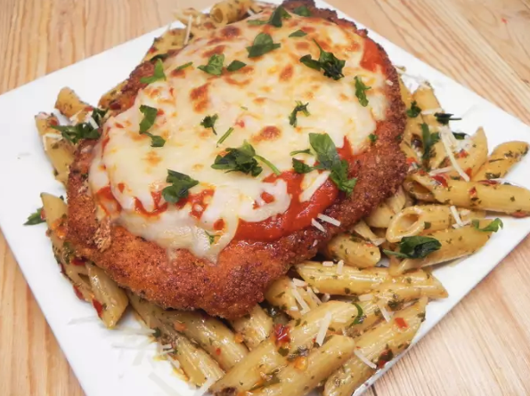

Set the oven rack about 6 inches from the heat source and preheat the oven's
broiler.
Slice chicken breast through the middle horizontally from one side to within 1/2
inch of the other side. Open the two sides and spread them out like an open
book. Pound chicken flat until about 1/2-inch thick.
Beat egg and cream together in a bowl.
Combine crushed pork rinds, Parmesan cheese, salt, garlic powder, red pepper,
black pepper, and Italian seasoning in a seperate shallow bowl or plate.
Dip chicken into egg mixture; coat completely. Press chicken into breading;
thickly coat both sides.
Heat a skillet over medium-high heat; add ghee. Place chicken in the pan; cook
until no longer pink in the center and the juices run clear, about 3 minutes per
side. An instant-read thermometer inserted into the center should read at least
165 degrees F (74 degrees C). Be careful to keep breading in place.
Transfer chicken to a baking sheet. Cover with tomato sauce; top with
mozzarella cheese.
Broil until cheese is bubbling and barely browned, about 2 minutes.